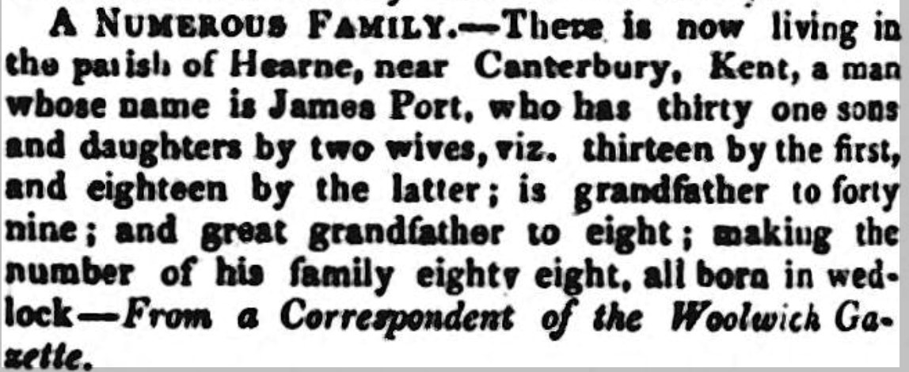
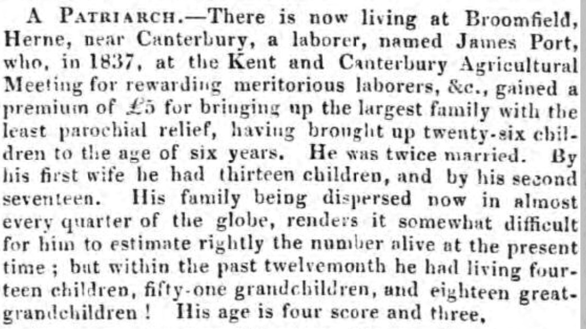
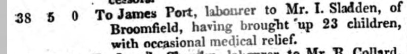
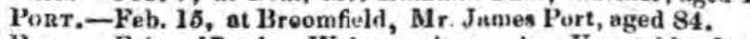
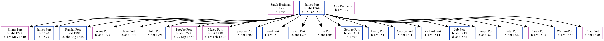

James Port c1764 - 1847
[ Home ] | [ Calendar ] | [ Surnames Index ] | [ Family History ]James Port, the 4 times great-grandfather of Nigel Horne, was born in Kent, England c. 17641 was married twice - to Sarah Hoffman (on Apr 14, 1787 in Reculver, Kent, England) Ann Richards (in Blean, Kent, England)3. He had 22 children: Emma, James, Randal, Anne, Jane, John, Phoebe, Mercy, Stephen, Israel, Isaac and Eliza Anne with Sarah; and George, Henry, George, Richard, Job, Joseph, Peter, Sarah, William and Eliza with Ann.
James spent all of his life in Kent, England. Throughout his life, he lived in several places around the county: in Broomfield, Kent, England on Dec 19, 1837; in Herne, Kent, England on Jun 6, 1840; and in Broomfield on Jun 6, 18414 and on Nov 4, 1845.
He died on Feb 15, 1847 in Kent2 and was buried in Herne on Feb 21, 1847.
Children
- Emma was born c. 1787
- James was born in 1790
- Randal was born c. 1791
- Anne was born c. 1793
- Jane was born c. 1794
- John was born c. 1796
- Phoebe was born c. 1797
- Mercy was born c. 1798
- Stephen was born c. 1800
- Israel was born c. 1801
- Isaac was born c. 1803
- Eliza Anne was born c. 1804
- George was born c. 1809
- Henry was born c. 1811
- George was born c. 1811
- Richard was born c. 1814
- Job was born c. 1817
- Joseph was born c. 1820
- Peter was born c. 1822
- Sarah was born c. 1825
- William was born c. 1827
- Eliza was born c. 1830
Citations
- 1841 England Census Online publication - Provo, UT, USA: The Generations Network, Inc., 2006.Original data - Census Returns of England and Wales, 1841. Kew, Surrey, England: The National Archives of the UK (TNA): Public Record Office (PRO), 1841. Data imaged from the National
- England & Wales, FreeBMD Death Index: 1837-1915 Online publication - Provo, UT, USA: The Generations Network, Inc., 2006.Original data - General Register Office. England and Wales Civil Registration Indexes. London, England: General Register Office. © Crown copyright. Published by permission of the Cont
- Public Member Trees Online publication - Provo, UT, USA: The Generations Network, Inc., 2006.Original data - Family trees submitted by Ancestry members.Original data: Family trees submitted by Ancestry members.
- 1841 England, Wales & Scotland Census - Findmypast (was age 75 and the head of the household)
Media
Canterbury Journal, Kentish Times and Farmers' Gazette June 6, 1840

Kentish Gazette - 4 Nov 1845

Canterbury Journal December 19, 1837

Kentish Gazette February 23, 1847

Kent, Canterbury Archdeaconry marriages - GBPRS/CANT/M/97141379/1
1841 England, Wales & Scotland Census - GBC/1841/0013937705
Kent marriages and banns - GBPRS/CANT/M/94045431/1
Family Tree
Generated by ged2site. Last updated on Nov 13, 2024